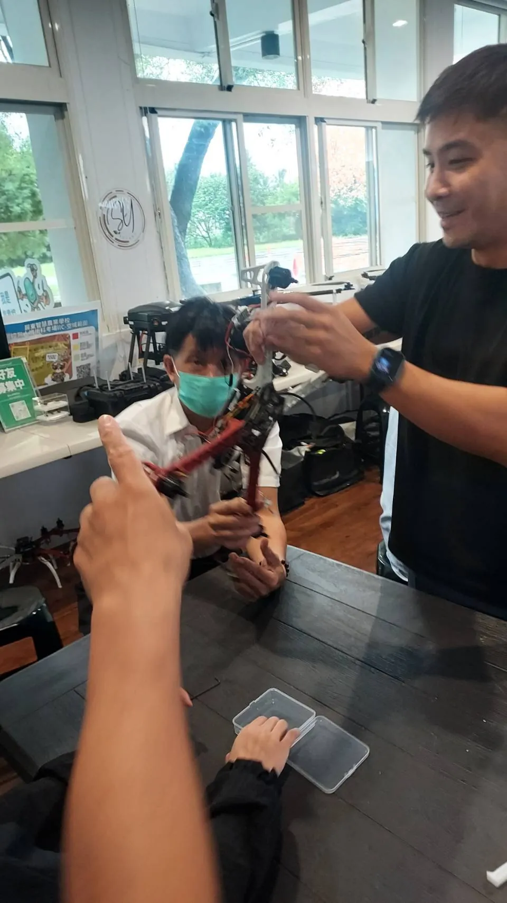
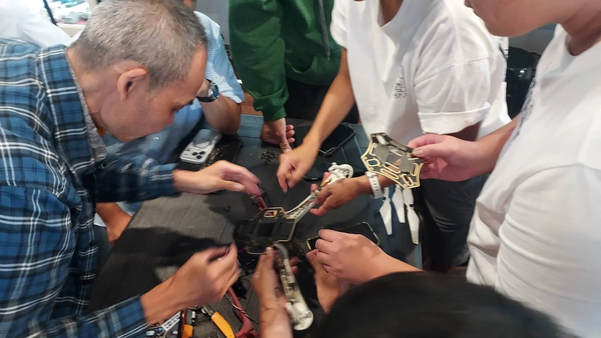
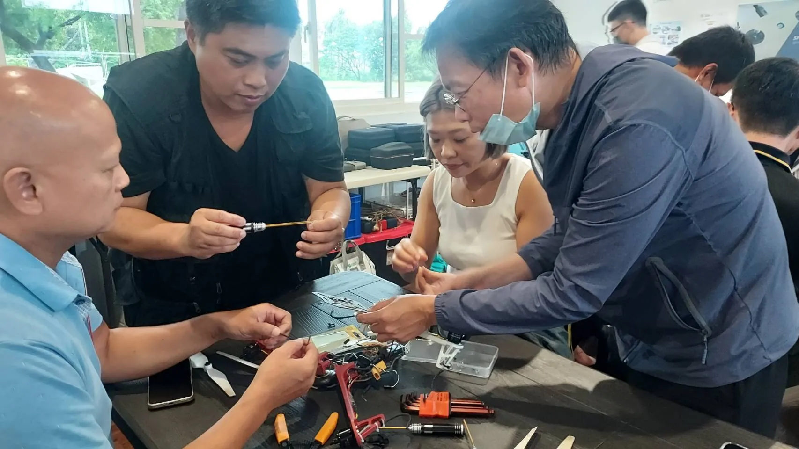
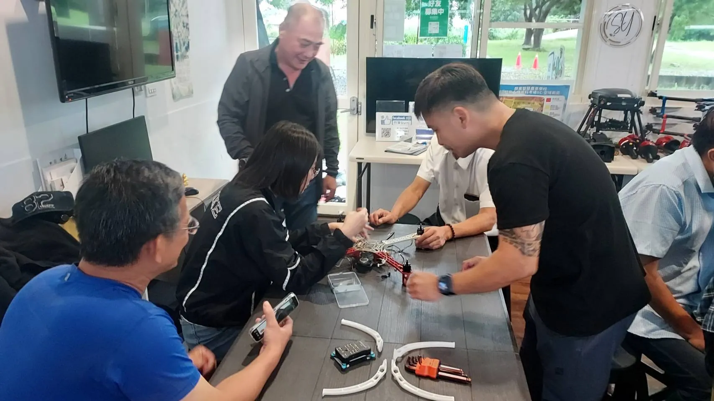

機體採購：先看後勤再看標價
農用無人機是「買一次、用好幾年」的生產工具，採購時最容易被忽略的不是規格，而是後勤：這台機子的零件好不好叫？壞了多久能修？原廠或代理商在你所在的區域有沒有據點？一台再強的機，只要零件缺貨、送修要等上很久，農忙季一停擺就是直接損失。
- 原廠保固範圍：確認保固涵蓋哪些元件、人為碰撞是否給付，送修流程與聯絡窗口要先問清楚。
- 代理商與服務據點：在地有據點或簽約維修站，臨場支援速度差很多。
- 零件供應穩定度：熱門耗材與常用備件是否常備供貨，避免「停產等料」。
- 韌體與技術更新：能否持續更新韌體、取得航線與感測功能的新版本。

選購原則同一級別裡，寧可選「後勤好、零件好叫」的機種，也不要只看標價便宜。農忙季的停機成本，往往比機體本身的差價更可觀。
電池與耗材：最日常的供應鏈
真正決定出勤率的，不是機體本身，而是耗材。槳葉、電池、噴嘴、濾網、泵浦墊圈這些東西會持續消耗，備料斷貨就等於停機。把它們當成「農資」來管理，固定備安全庫存。
| 耗材項目 | 消耗特性 | 備料建議 |
|---|---|---|
| 槳葉 | 碰撞、沙塵即損，最常更換 | 隨車常備一整組 |
| 電池 | 循環壽命有限，屬漸進汰換 | 依作業量準備可輪替組數 |
| 噴嘴／濾網 | 藥劑殘易堵塞 | 每次作業後清理，備數個備品 |
| 泵浦墊圈、管路 | 老化、漏液 | 季節性檢查更換 |
| 馬達／電變 | 屬故障件、非常備 | 找原廠或服務商叫料 |

維修保養：找服務商還是自修
維修可以分成兩層：日常檢查與耗材更換多數飛手自己就能做；涉及電子、飛控與動力的故障則建議交給原廠或合格服務商。問題在於怎麼判斷「自己能修到哪」。
委外維修的好處
- 原廠有檢測儀器與技術資訊，判斷準
- 保固期內送修較有保障
- 複雜電子故障免自行冒險
自修的條件
- 耗材更換、外觀與螺絲緊固可自行處理
- 需有工具、料件與基本電子常識
- 飛控、電變等進度故障不建議自修

實務上常見的分工是：飛手負責「收工清洗、槳葉更換、外觀與螺絲檢查、電池保養」；原廠或服務站負責「動力、飛控、圖傳等電子件故障」。把這條界線先畫清楚，故障時才不會手忙腳亂。
數據平台與保險
供應鏈不只硬體。農用機越來越依賴地面站、雲端處理與航線管理平台，這些軟體是否持續維護、資料能不能順利匯出、中斷後能不能切換替代工具，都會影響長期使用。另外，機體登記、責任險與第三方責任規劃，也是營運前應該一併處理的環節。
- 確認使用的地面站與雲端平台仍持續更新與維運
- 定期備份航線、作業紀錄與影像，避免平台綁架
- 機體完成登記，操作符合證照要求（以主管機關現行公告為準）
- 評估適當的機體保險與第三人責任規劃
軟體也是供應鏈當你依賴某個平台排航線、看數據，就要留意它的存續與資料可攜性。隨時保留匯出能力，才不會在服務收掉時一籌莫展。
建立自有維護能力
長期下來，與其每次小毛病都等服務商，不如逐步建立基本的自修能力。可以從跟原廠或合格修護站一次完整的季檢開始，請師傅當面說明機架拆解、走線、螺絲鎖付與日常檢查重點；有需要再進修組裝與電子基礎課程。懂得基本判斷，送修時也能講清楚問題、避免被報價灌水。

務實建議把「原廠／服務商」與「自己」的分工白紙黑字寫下來：哪些自己處理、哪些送修、備料庫存放哪、誰負責聯絡窗口。這套後勤 SOP，才是農用機長期穩定出勤的真正底盤。
常見問答
買農用機時，後勤要怎麼問原廠？
直接問三件事：保固範圍與送修流程、常用備件是否常備供貨、你所在地有沒有簽約服務站。把這些答案寫進比選條件，比只比標價更實在。
什麼故障絕對不要自己修？
飛控、電變、馬達繞線與電池相關的電子故障，牽涉安全與除膠焊接，建議交給原廠或合格服務商；自修只建議做耗材更換與外觀檢查。
一定要保險嗎？
植保噴藥與高空作業有第三方風險，商業用途建議評估適當的機體與責任保險。實際投保內容以保險公司商品與法規要求為準。